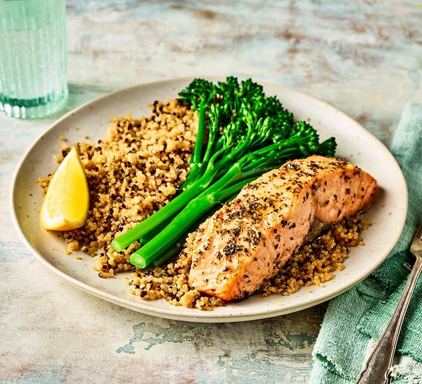

Air fryer salmon
Salmon fillets cook beautifully in an air fryer and make a delicious meal when coated in a herb seasoning and
served with greens and grains

Ingredients
- 1 tsp salt
- 1 tsp pepper
- 1 tsp mixed herbs
- 1 tsp garlic granules (optional)
- 4 salmon fillets (we used 4 x 130g fillets), skin on or removed
- ½ tbsp olive oil
Steps
- Combine the salt, pepper, mixed herbs and garlic granules, if using, in a bowl, then scatter onto a plate.
Rub each salmon fillet with a little olive oil and roll in the seasoning to coat.
- Put in the air fryer basket in one layer and cook at 180C for 8-10 mins, until cooked through. If you have
larger salmon fillets they will need to be cooked for longer – keep checking after 10 mins and cook in 1-2
min blasts, until ready. Serve with greens and quinoa or rice, if you like.